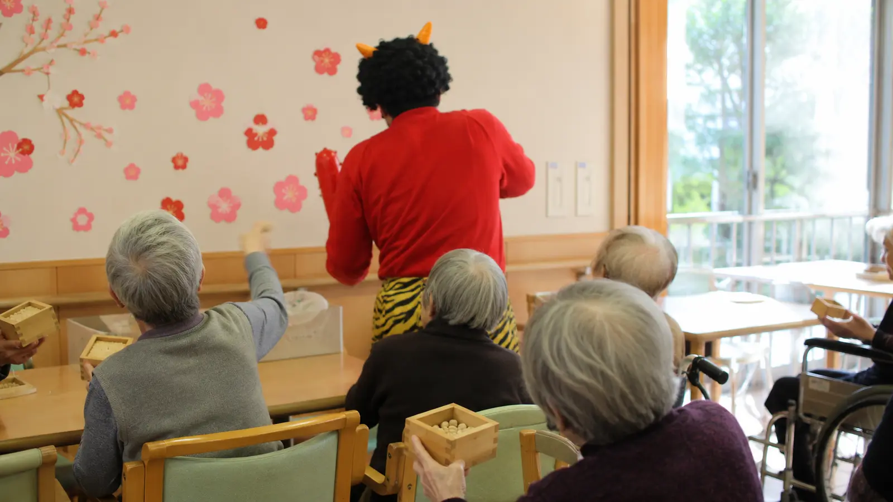

Monthly Care Report
2026年2月 (February 2026)
節分と、立春の気配 — 嚥下対応個別食の完全無償化
厳しい寒さが続く2月は、節分と立春。鬼の登場、入居者ご自身の手作りチョコレート ── 寒い中でも温かい思い出が積み重なる月でした。Care Support Pass のご支援を原資に、嚥下機能対応の個別調整食の追加料金(従来 月¥15,000)を完全無償化しました。
Numbers
数字で見る今月
現入居者数
18名
新規ご入居
1名
活動イベント
4回
外部訪問者
14名
In Focus
今月の主な瞬間

Album
今月のひとこま


Story
今月の活動
節分の工夫
2月3日の節分では、スタッフが赤鬼に扮して登場。入居者の方々には、誤嚥対策のため個包装された福豆をお渡しし、それを鬼に向かって投げていただきました。「鬼は外!」の掛け声が共用ラウンジに響き渡る、楽しいひと時でした。恵方巻きも、嚥下機能に合わせて細巻きに調整したり、ペースト状の中身を使ったりと、お一人お一人に対応しました。
手作りバレンタイン
2月14日には、入居者の方々がご家族(お孫さん・ひ孫さん)宛てに、手作りのチョコレートカードをお作りになる時間を設けました。チョコレートそのものは管理栄養士が用意し、入居者の方はカードへの一言メッセージを書いていただく形式。郵送した翌週、ご家族から「思いがけないプレゼントに泣きました」というお電話をいただいたケースもありました。
嚥下対応個別食の完全無償化
従来、嚥下機能に応じた個別調整食(きざみ食・ミキサー食・とろみ調整食など)には、月¥15,000 の追加料金が発生していました。今月より、Care Support Pass のご支援を原資に、この追加料金を完全無償化しました。現在、当施設では18名のうち11名が何らかの嚥下調整食をご利用中。月あたり 約¥165,000(¥15,000 × 11名)の負担軽減となります。
来月の予定
- 3月3日: ひな祭り (ひな祭り祝膳・人形展示)
- 3月14日: ホワイトデー (ご家族からのお返しイベント)
- 3月下旬: お花見準備 (上野公園での散歩を計画)
Care Support Pass · Finance
支援者数 と 収支報告
支援者数 / 目標 25万人
112.4%
0
目標 250,000名 / 月¥25,000,000
112.4%
当月 支援者数
281,000名
当月 支援額
¥28,100,000
累計 支援額
¥157,000,000
支援金の使い道 — 2026年2月
嚥下対応個別調整食の完全無償化(月¥165,000の負担軽減)、全既存施策の継続。
From the Director